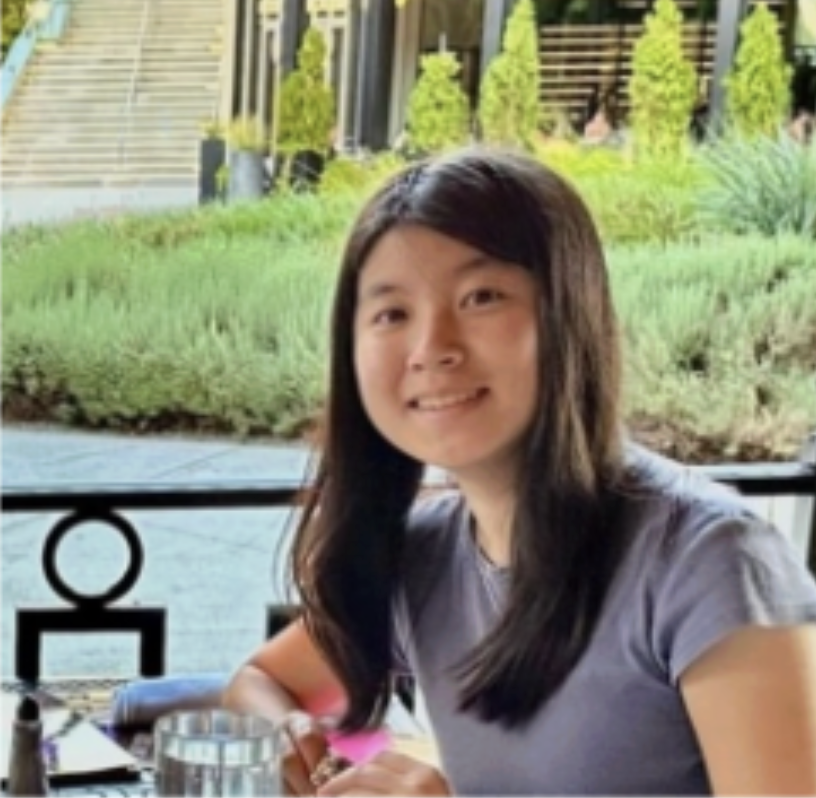
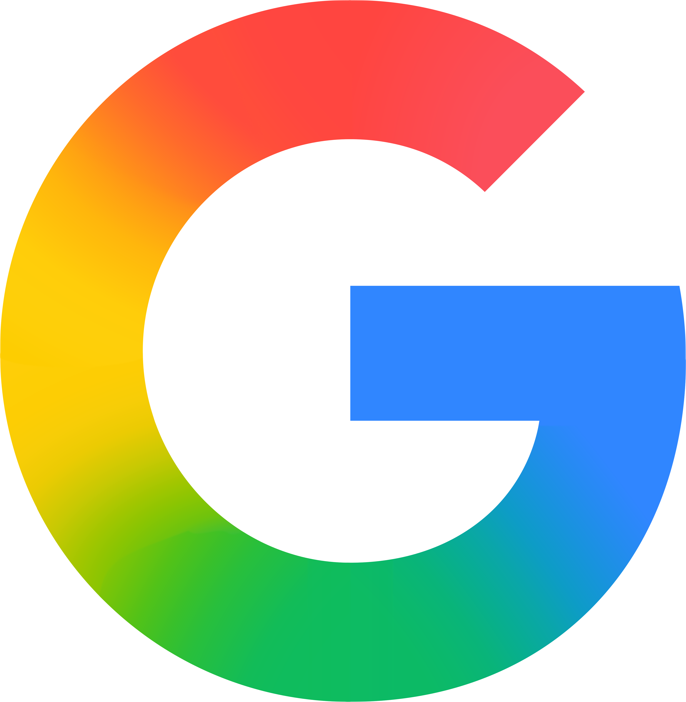
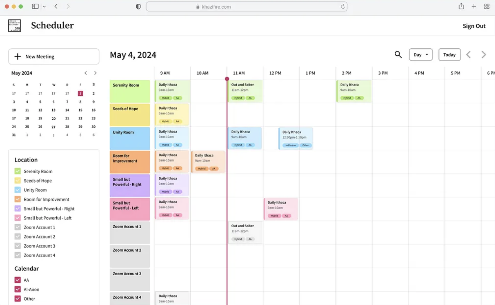
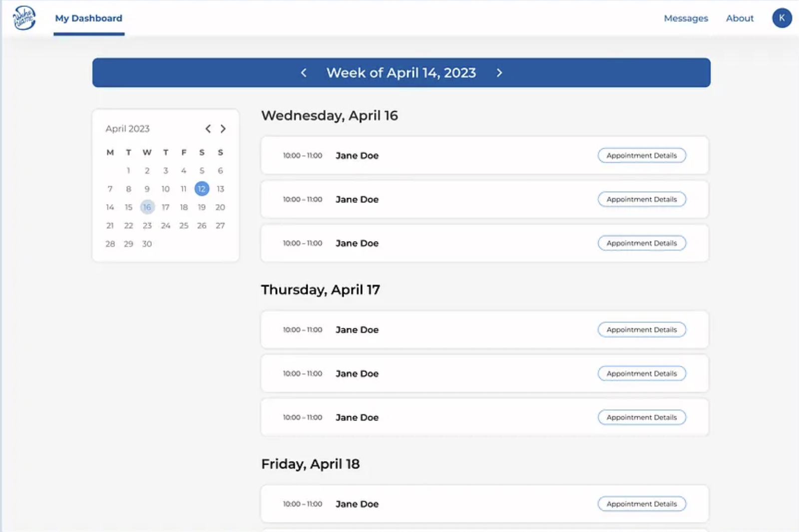
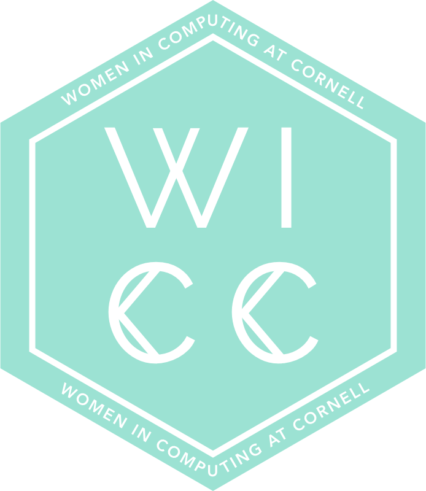

Hi, I’m Victoria! 🪐
I’m a third-year Computer Science major at Cornell University (Graduating May 2027), originally from the Bay Area, California. I’m highly interested in SWE, MLE, and TPM/PM roles. My technical work spans ML, infra, and reliability in high-trust domains, and has impacted millions of merchants and billions of users.

Work Experience
Google (Summer 2025)

- Core Machine Learning Infra (Python): pipeline streamlining complex multi-step workflow into a single command automating model inference, copyright checks, and risk explanation with greater flexibility in I/O format and parameters
- Google Mobile Services Core (Go): server feature recommending developers to CC on mobile crashes from fleet of 3B+ devices
Google (Summer 2024)
- Merchant Trust (Java, SQL, C++): Developed data ingestion pipeline w/ FlumeJava to enhance abuse verification process for high-revenue merchants. Migrated second trust signal pipeline for 18.5M merchants ahead of platform deprecation; replaced obsolete logic and transitioned system from C++ to Java
Hack4Impact (Ithaca Community Recovery)
- Built admin dashboard for addiction recovery orgs totaling 30K+ annual members; resolved critical bugs spanning frontend, backend, and API routes and presented at Cornell CS showcase

Hack4Impact (OKB Hope Foundation)
- Developed and shipped telehealth booking website for Ghanaian psychiatrists and patients; created psychiatrist verification and recommendation logic

Leadership
Women in Computing at Cornell (WICC)

- Former Vice President of Academic Team: led 6 directors in organizing faculty, career development, and underclassmen outreach events open to 2K+ club members
- Also served as Mentorship Director, Faculty Relations Director
Hack4Impact (Product and Business)
- Project research + sourcing, drafting PRD for small funds endowment management project, club partnerships, fundraising, publications
Hobbies
🎭 Theater: I’ve performed in theater for 10+ years! I’ve starred in Alice in Wonderland, A Midsummer Night’s Dream, Legally Blonde, etc. I’ve done real stage combat, memorized hundreds of Shakespeare lines, and know the entire Hamilton discography by heart.
🍵 Matcha: I’m also always looking to find interesting matcha desserts, such as Izumi Matcha’s Yuzu Strawberry Fizzler, Matcha Town’s Matcha & Yuzu-Shiso Sorbet, and Spot Dessert Bar’s Matcha Lava Cake - and yes, Beli is my favorite social media!